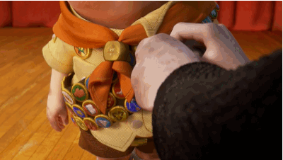

O filme *Up: Altas Aventuras* conta a história de Carl, um senhor que sempre sonhou em conhecer lugares novos ao lado de sua esposa, Ellie. Depois que ela falece, Carl decide realizar esse sonho sozinho e coloca vários balões em sua casa para fazê-la voar até a América do Sul. Porém, ele descobre que Russell, um jovem escoteiro, estava dentro da casa. A partir daí, os dois embarcam em uma aventura cheia de desafios, descobertas e momentos divertidos. Durante a viagem, Carl aprende que algumas das melhores aventuras acontecem ao lado de outras pessoas.
• O protagonista. Ele é um viúvo de 78 anos que decide fazer sua casa voar com balões.
• Um menino escoteiro de 8 anos que acaba viajando junto com Carl por acidente.
• A falecida esposa de Carl, cujo sonho de infância era a viagem para a América do Sul.
•O famoso explorador que virou o antagonista da história.
• O cachorro fofo que usa uma coleira especial para falar com os humanos.
• A grande ave exótica e colorida que eles encontram naventura.
O filme *Up – Altas Aventuras* tem várias curiosidades interessantes. Ele foi lançado em 2009 pela Pixar e fez história por ser o primeiro filme do estúdio a abrir o Festival de Cannes. A trilha sonora, criada por Michael Giacchino, também se destacou e ganhou o Oscar. Uma das cenas mais famosas é quando Carl faz sua casa voar usando milhares de balões. Além disso, o cachorro Dug conquistou o público com sua coleira, que permite que ele diga tudo o que está pensando. Já o pássaro Kevin foi criado especialmente para o filme e não representa uma espécie real. Esses detalhes ajudaram a tornar *Up* um filme marcante e querido por muitas pessoas.
Deixe sua opinião sobre o filme aqui!
